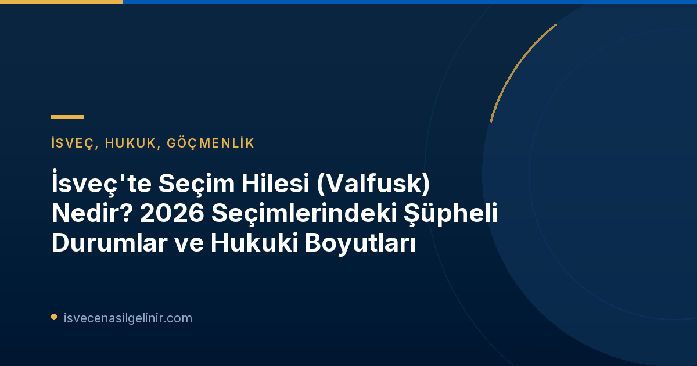

İsveç, uzun yıllardır demokratik süreçlerinin şeffaflığı ve dürüstlüğüyle tanınan bir ülke olmuştur. Ancak son dönemde ortaya çıkan "valfusk" yani seçim hilesi iddiaları, bu imaja gölge düşürme potansiyeli taşıyor. Özellikle 2026 genel seçimlerine ilişkin iddialar, ülkenin adalet ve siyaset kurumlarını harekete geçirmiş durumda.
20zeic6 İsveç Seçimlerinde "Valfusk" İddiaları Neler?
SVT Nyheter'in haberine göre, V-Partiet (Sol Parti) mensubu Mohamed Abdukardir Ali'nin milletvekili seçilmesiyle ilgili şüpheler, ülke genelinde bir valfusk tartışması başlattı. Ali'nin meclise girişi, Borlänge'de yürütülen ve polisin dahil olduğu bir soruşturmayla gölgeleniyor. Riksenheten mot korruption (Ulusal Yolsuzlukla Mücadele Birimi) tarafından yürütülen bu soruşturma, sadece Borlänge ile sınırlı kalmayıp, riksdagsvalet (parlamento seçimi) ile bağlantılı başka bir dosyayı da kapsıyor.
Bu gelişmeler, İsveç'teki seçmenleri ve özellikle İsveç vatandaşlığına yeni geçmiş bireyleri, oy verme süreçlerinin nasıl işlediği ve seçim mekanizmalarının güvenliği konusunda endişelendiriyor. Hukuki süreçlerin nasıl ilerleyeceği ve bu iddiaların ülkenin demokratik yapısına etkileri yakından takip ediliyor.
İsveç Hukukunda "Valfusk" Nedir ve Nasıl Tanımlanır?
"Valfusk", İsveç Ceza Kanunu'nda (Brottsbalken) yer alan ve seçimlerin dürüstlüğünü ve serbestliğini tehlikeye atan eylemleri kapsayan bir suçtur. Genel olarak, oy manipülasyonu, tehdit, rüşvet veya yanlış bilgi yayma gibi fiiller bu kapsamda değerlendirilir. Ancak, her şikayet valfusk olarak kabul edilmeyebilir; suçun oluşması için belirli kriterlerin karşılanması gerekmektedir.
Valfusk Kapsamında Değerlendirilebilecek Bazı Eylemler:
- Oyları manipüle etmek veya değiştirmek.
- Seçmenleri oy kullanmamaya veya belirli bir partiye oy vermeye zorlamak.
- Sahte oy pusulaları düzenlemek.
- Seçim kurullarına veya görevlilere baskı yapmak.
- Yanlış veya yanıltıcı seçim propagandası yapmak (belli koşullarda).
İsveç'te oyların nasıl sayıldığına, saklandığına ve denetlendiğine dair yürürlükte olan katı kurallar, seçim güvenliğini sağlamayı amaçlar. Seçmenlerin kimlik doğrulaması, oy verme kabinlerinde gizliliğin korunması ve oy pusulalarının güvenli bir şekilde toplanması, bu kuralların başlıca örnekleridir.
Oy Verme Kuralları ve Seçmen Sorumlulukları
İsveç'te oy kullanma süreci oldukça düzenlidir:
| Kural | Açıklama |
|---|---|
| Kimlik Doğrulama | Oy kullanmadan önce geçerli bir kimlik belgesi ibraz edilmesi zorunludur. |
| Gizlilik | Oy verme kabinlerinde oyunu kullanırken gizliliğin korunması esastır. Başkalarının oyunu görmesi veya etkilemesi engellenir. |
| Oy Pusulası | Seçmenlere yalnızca resmi oy pusulaları verilir. Pusulaların zarar görmemiş ve işaretlenmemiş olması gerekir. |
| Zarflar ve Kutular | Oy pusulaları, mühürlü zarflara konulduktan sonra mühürlü seçim sandıklarına atılır. |
Bu kurallar, her vatandaşın hür iradesiyle oy kullanma hakkını güvence altına alırken, aynı zamanda seçim sürecinin her aşamasında şeffaflığı ve hesap verebilirliği sağlamayı hedefler. İsveç Vatandaşlık Sınavı'na hazırlananlar için, bu tür hukuki ve demokratik süreçleri anlamak, ülkenin değerlerini benimsemek açısından da büyük önem taşımaktadır.
Hukuki Süreç ve Yolsuzlukla Mücadele Birimi'nin Rolü
İddia edilen valfusk olaylarında, Riksenheten mot korruption (Ulusal Yolsuzlukla Mücadele Birimi) gibi özel birimler devreye girer. Bu birim, savcılık bünyesinde faaliyet gösterir ve yolsuzluk, rüşvet ve seçim hilesi gibi ciddi suçları soruşturmakla görevlidir.
Bir valfusk iddiası ortaya çıktığında:
- **Ön Soruşturma:** İlk olarak, iddiaların ciddiyeti ve delillerin varlığı değerlendirilir.
- **Araştırma:** Yeterli kanıt bulunması halinde, polis ve savcılık işbirliğiyle detaylı bir soruşturma başlatılır.
- **Yargılama:** Soruşturma sonucunda suç isnadı güçlü bulunursa, dava açılır ve yargılama süreci başlar.
Hukuk Profesörü Joakim Nergelius'un belirttiği gibi, "valfusk" sadece bir "bagatellbrott" (önemsiz suç) değildir; aksine, demokrasinin temelini sarsan ciddi bir eylemdir. Farklı mahkemelerin benzer olaylarda farklı kararlar verebileceği ihtimali, bu tür davaların karmaşıklığını ve titizlikle yürütülmesi gerektiğini göstermektedir.
Vatandaşlar Nasıl Katkıda Bulunabilir ve Şüpheli Durumları Bildirebilir?
İsveç'te seçimlerin dürüstlüğünü korumak, sadece yasal kurumların değil, aynı zamanda vatandaşların da sorumluluğundadır. Şüpheli durumları fark eden herkesin bunu ilgili mercilere bildirmesi teşvik edilir.
Şüpheli Durumları Bildirme Yolları:
- **SVT Nyheter:** SVT'nin "Tipsa SVT Nyheter" veya "Verifieringshjälpen" hizmetleri aracılığıyla şüpheli bilgi veya sahte görüntüleri bildirebilirsiniz.
- **Polis:** Doğrudan polise başvurarak şikayette bulunabilirsiniz.
- **Seçim Kurulları:** Yerel seçim kurullarına veya İl İdare Kurullarına (Länsstyrelsen) ihbarda bulunabilirsiniz.
SVT'nin yayıncılık ilkeleri "saklighet och opartiskhet" (gerçeklik ve tarafsızlık) üzerine kuruludur. Bu, haberlerin doğru ve alakalı olmasını, acil durumlarda bile teyit edilmemiş bilgilerin dikkatle aktarılmasını gerektirir. Vatandaşların bu ilkelere güvenerek bildirim yapması, demokratik sürece olan inancın korunmasına yardımcı olur.
Bu gelişmeler yaşanırken, İsveç'in demokratik kurumları, yargı sistemi ve medya etiği, ülkenin hukukun üstünlüğüne olan bağlılığını bir kez daha test etmektedir. Vatandaşların bilinçli ve sorumlu katılımı, bu süreçten daha güçlü bir demokrasiyle çıkmanın anahtarı olacaktır.
Referanslar:
Merak Ettikleriniz Mi Var?
İsveç'teki seçim hukuku ve göçmenlik süreçleri hakkında daha fazla bilgi edinmek için bize ulaşın veya uzman danışmanlarımızdan destek alın.